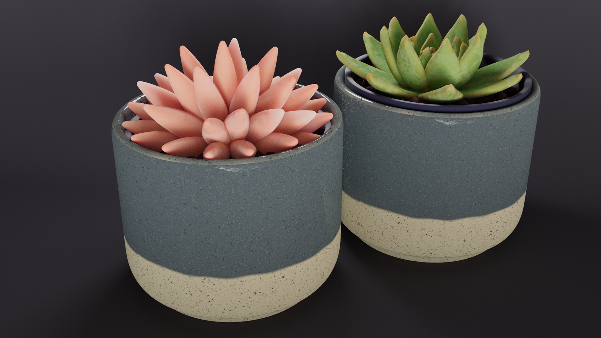
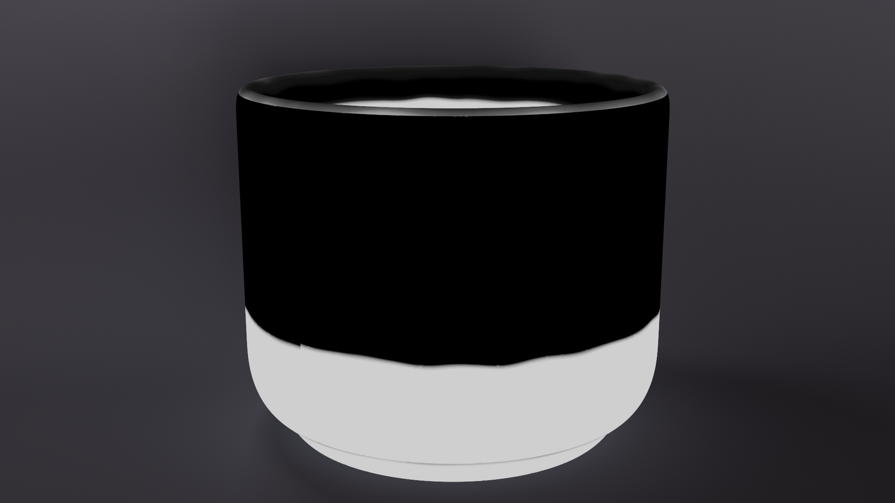
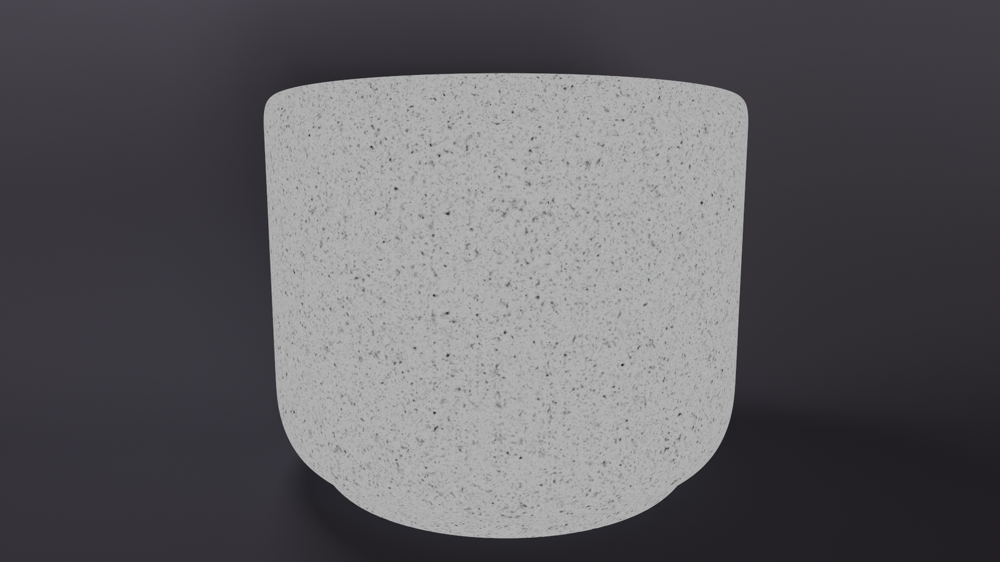
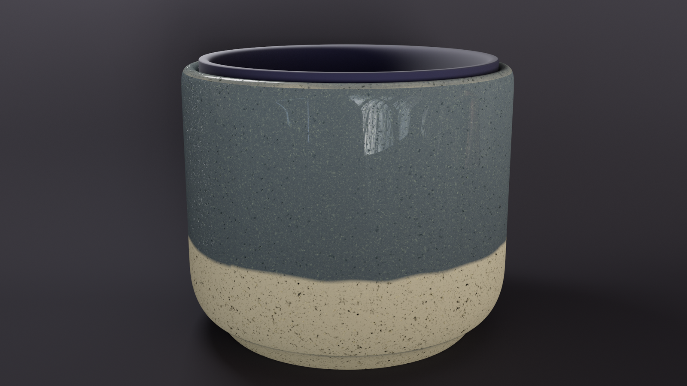
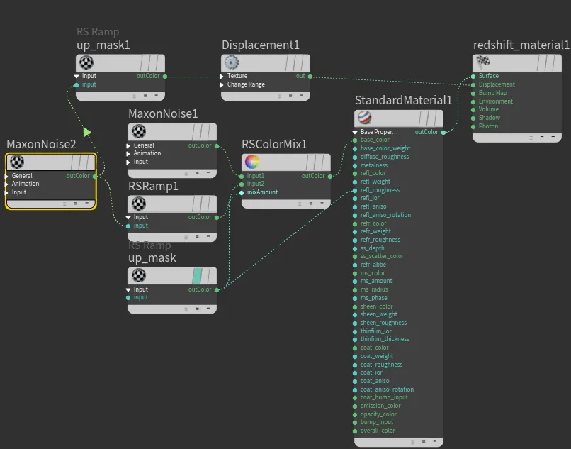
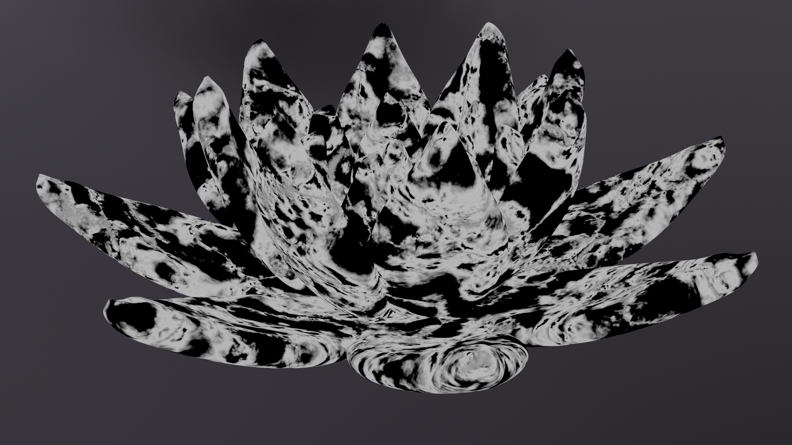
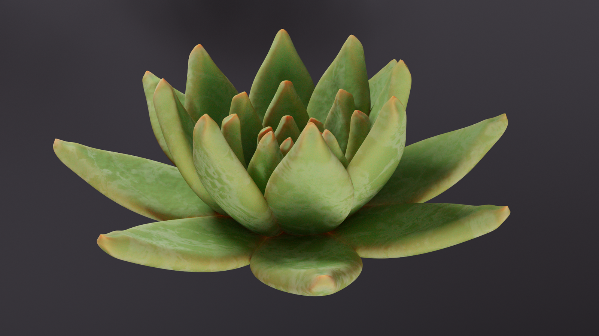
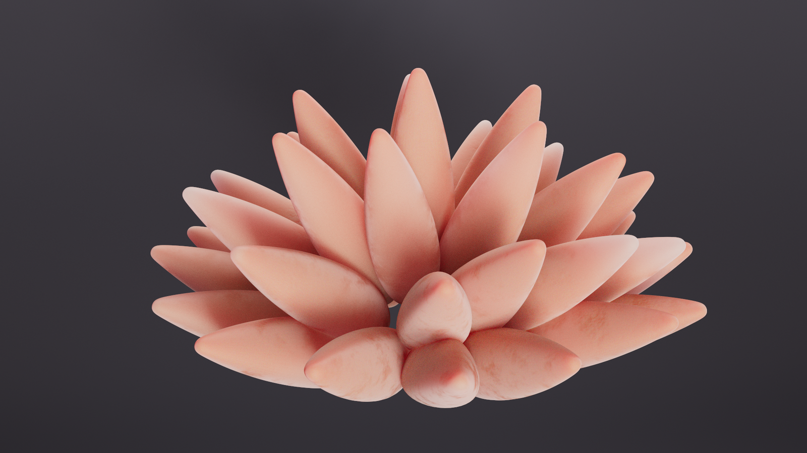
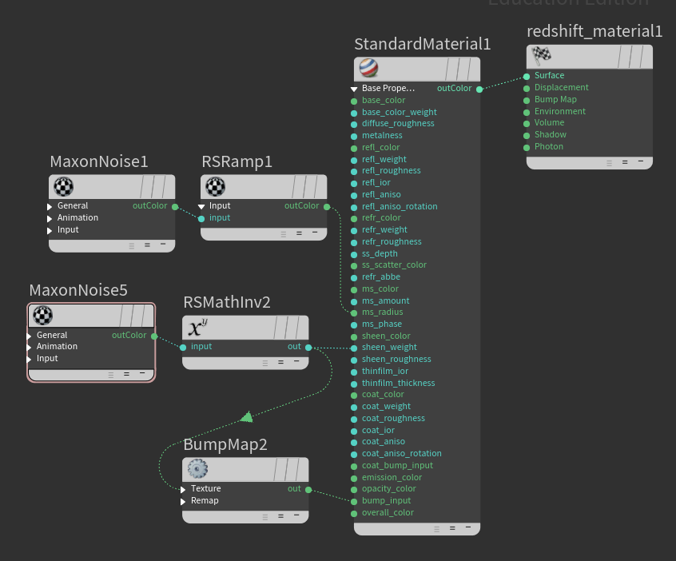

The project is finished in Houdini, including modeling, texturing, and rendering, and I used Nuke to blur the background. All of the textures here are procedural and use OSL to finish it.
Succulent

I used a Redshift Ramp as the vase mask to make the vase have different colors, and I gave Maxon Noise to let the vase have a spot on its surface. I added the Displacement to make those spots look more 3D.








First I used Maxon Noise as a surface mask, and then I used Redshift Ramp to add colors. To make the plant have some spots, I used Maxon Noise as a sheen’s mask.